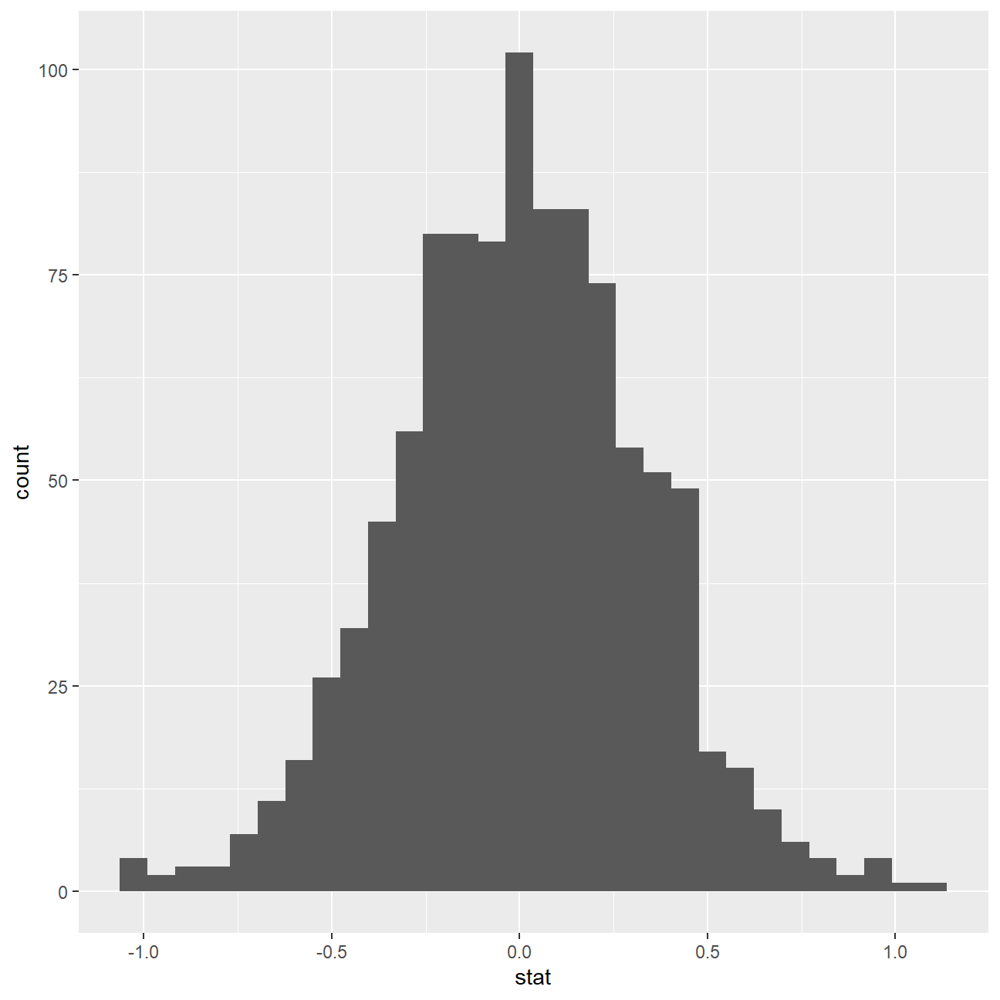

Youth Risk Behavior Surveillance
Every two years, the Centers for Disease Control and Prevention conduct the Youth Risk Behavior Surveillance System (YRBSS) survey, where it takes data from high schoolers (9th through 12th grade), to analyze health patterns. Below, I provide a thorough analysis of this data.
Load the data
This data is part of the openintro textbook and we can load and inspect it. There are observations on 13 different variables, some categorical and some numerical. Below, we have a first look at the data.
data(yrbss)
glimpse(yrbss)## Rows: 13,583
## Columns: 13
## $ age <int> 14, 14, 15, 15, 15, 15, 15, 14, 15, 15, 15...
## $ gender <chr> "female", "female", "female", "female", "f...
## $ grade <chr> "9", "9", "9", "9", "9", "9", "9", "9", "9...
## $ hispanic <chr> "not", "not", "hispanic", "not", "not", "n...
## $ race <chr> "Black or African American", "Black or Afr...
## $ height <dbl> NA, NA, 1.73, 1.60, 1.50, 1.57, 1.65, 1.88...
## $ weight <dbl> NA, NA, 84.4, 55.8, 46.7, 67.1, 131.5, 71....
## $ helmet_12m <chr> "never", "never", "never", "never", "did n...
## $ text_while_driving_30d <chr> "0", NA, "30", "0", "did not drive", "did ...
## $ physically_active_7d <int> 4, 2, 7, 0, 2, 1, 4, 4, 5, 0, 0, 0, 4, 7, ...
## $ hours_tv_per_school_day <chr> "5+", "5+", "5+", "2", "3", "5+", "5+", "5...
## $ strength_training_7d <int> 0, 0, 0, 0, 1, 0, 2, 0, 3, 0, 3, 0, 0, 7, ...
## $ school_night_hours_sleep <chr> "8", "6", "<5", "6", "9", "8", "9", "6", "...skim(yrbss)| Name | yrbss |
| Number of rows | 13583 |
| Number of columns | 13 |
| _______________________ | |
| Column type frequency: | |
| character | 8 |
| numeric | 5 |
| ________________________ | |
| Group variables | None |
Variable type: character
| skim_variable | n_missing | complete_rate | min | max | empty | n_unique | whitespace |
|---|---|---|---|---|---|---|---|
| gender | 12 | 1.00 | 4 | 6 | 0 | 2 | 0 |
| grade | 79 | 0.99 | 1 | 5 | 0 | 5 | 0 |
| hispanic | 231 | 0.98 | 3 | 8 | 0 | 2 | 0 |
| race | 2805 | 0.79 | 5 | 41 | 0 | 5 | 0 |
| helmet_12m | 311 | 0.98 | 5 | 12 | 0 | 6 | 0 |
| text_while_driving_30d | 918 | 0.93 | 1 | 13 | 0 | 8 | 0 |
| hours_tv_per_school_day | 338 | 0.98 | 1 | 12 | 0 | 7 | 0 |
| school_night_hours_sleep | 1248 | 0.91 | 1 | 3 | 0 | 7 | 0 |
Variable type: numeric
| skim_variable | n_missing | complete_rate | mean | sd | p0 | p25 | p50 | p75 | p100 | hist |
|---|---|---|---|---|---|---|---|---|---|---|
| age | 77 | 0.99 | 16.16 | 1.26 | 12.00 | 15.0 | 16.00 | 17.00 | 18.00 | <U+2581><U+2582><U+2585><U+2585><U+2587> |
| height | 1004 | 0.93 | 1.69 | 0.10 | 1.27 | 1.6 | 1.68 | 1.78 | 2.11 | <U+2581><U+2585><U+2587><U+2583><U+2581> |
| weight | 1004 | 0.93 | 67.91 | 16.90 | 29.94 | 56.2 | 64.41 | 76.20 | 180.99 | <U+2586><U+2587><U+2582><U+2581><U+2581> |
| physically_active_7d | 273 | 0.98 | 3.90 | 2.56 | 0.00 | 2.0 | 4.00 | 7.00 | 7.00 | <U+2586><U+2582><U+2585><U+2583><U+2587> |
| strength_training_7d | 1176 | 0.91 | 2.95 | 2.58 | 0.00 | 0.0 | 3.00 | 5.00 | 7.00 | <U+2587><U+2582><U+2585><U+2582><U+2585> |
Exploratory Data Analysis
We will first start with analyzing the weight of participants in kilograms.
We are missing 1004 weight observations. (see output from skim(yrbss) above.)
Below, we have plotted the distribution of the weights both with and without NAs. Both plots look the same.
#Distribution including missing values.
ggplot(yrbss, aes(x = weight)) +
geom_density(alpha = 0.2) + #density plot with tranparency set to 20%
theme_bw() + #theme
labs ( x="Weight",
title = "Weight Distribution",
y = "Density"
)#Removing the NAs from the data.
yrbss_NA_removed <- yrbss %>%
select(weight) %>% #selecting the weight column
na.omit() #removing NAs
skim(yrbss_NA_removed) #confirms that there are no missing values| Name | yrbss_NA_removed |
| Number of rows | 12579 |
| Number of columns | 1 |
| _______________________ | |
| Column type frequency: | |
| numeric | 1 |
| ________________________ | |
| Group variables | None |
Variable type: numeric
| skim_variable | n_missing | complete_rate | mean | sd | p0 | p25 | p50 | p75 | p100 | hist |
|---|---|---|---|---|---|---|---|---|---|---|
| weight | 0 | 1 | 67.9 | 16.9 | 29.9 | 56.2 | 64.4 | 76.2 | 181 | <U+2586><U+2587><U+2582><U+2581><U+2581> |
#Distribution without NA values.
ggplot(yrbss_NA_removed, aes(x = weight)) +
geom_density(alpha = 0.2) + #density plot with tranparency set to 20%
theme_bw() + #theme
labs ( x="Weight", title = "Weight Distribution (NAs removed)",
y = "Density"
) #assigning axis titles and main title
Next, we consider the possible relationship between a high schooler’s weight and their physical activity. Plotting the data is a useful first step because it helps us quickly visualize trends, identify strong associations, and develop research questions.
Let’s create a new variable physical_3plus, which will be yes if they are physically active for at least 3 days a week, and no otherwise.
yrbss <- yrbss %>%
mutate(physical_3plus = ifelse(physically_active_7d >= 3, "yes", "no"))
#Create overview with average and median weight for people with different physical activity.
yrbss_weight_physical_3plus <- yrbss %>% filter(!is.na(physical_3plus), !is.na(weight)) %>%
group_by(physical_3plus) %>%
summarise(
count = n(),
mean_weight = mean(weight),
median_weight = median(weight)) %>%
mutate(prop= count/sum(count))
#Make table from overview created above
yrbss_weight_physical_3plus %>%
kbl(col.names = c("Physical_3plus", "Count","Mean Weight", "Median Weight", "Proportion")) %>%
kable_material(c("striped", "hover")) %>%
kable_styling(fixed_thead = T)| Physical_3plus | Count | Mean Weight | Median Weight | Proportion |
|---|---|---|---|---|
| no | 4022 | 66.7 | 62.6 | 0.325 |
| yes | 8342 | 68.4 | 65.8 | 0.675 |
#remove NAs for plotting in order to spot trends.
yrbss_physical_3plus_NA_rmeoved <- yrbss %>%
filter(physical_3plus =="yes" | physical_3plus == "no")
#Boxplots to compare weights of people with different physical activity.
ggplot(yrbss_physical_3plus_NA_rmeoved, aes(y = weight)) +
#boxplot
geom_boxplot() +
facet_wrap(~physical_3plus) +
#theme
theme_bw() +
#assigning axis titles and main title
labs ( x="",
title = "Weight Distribution",
y="Weight"
)
Next, we provide a 95% confidence interval for the population proportion of high schools that are NOT active 3 or more days per week?
#Create the CI
yrbss_physical_3plus_prop <- yrbss %>%
#Remove NAs
filter(!is.na(physical_3plus)) %>%
#Group
group_by(physical_3plus) %>%
#sum of non NAs for physical_3plus
summarise(
count = n()) %>%
mutate(
#proportion yes and no
prop= count/sum(count),
#formula for SE since conditions np and n(1-p) >= 10 are met
SE = sqrt(prop*(1-prop)/count),
#assuming normal distribution
critical_Z = qnorm(0.975),
lower_end = prop - critical_Z*SE,
higher_end = prop + critical_Z*SE
)
#Create table to present CI
yrbss_physical_3plus_prop %>%
filter(physical_3plus =="yes") %>%
select(physical_3plus,lower_end,higher_end) %>%
kbl(col.names = c("Physical_3plus", "Lower CI","Upper CI")) %>%
kable_material(c("striped", "hover")) %>%
kable_styling(fixed_thead = T)| Physical_3plus | Lower CI | Upper CI |
|---|---|---|
| yes | 0.659 | 0.679 |
Now, we make a boxplot of physical_3plus vs. weight to examine a potential relationship between these two variables?
We find that the weight is similar and slightly higher for those that are more physically active. This is in contrast with our initial expectations. We expected to see opposite results, since doing more sports would reduce the chances of being overweight.
#Note that this is the same plot as we did to quickly analyse the data.
#Boxplots to compare weights of people with different physical activity.
ggplot(yrbss_physical_3plus_NA_rmeoved, aes(y = weight)) +
#boxplot
geom_boxplot() +
facet_wrap(~physical_3plus) +
#theme
theme_bw() +
#assigning axis titles and main title
labs ( x="",
title = "Weight Distribution",
y = "Weight"
) Confidence Interval
Boxplots show how the medians of the two distributions compare, but we can also compare the means of the distributions using either a confidence interval or a hypothesis test. Note that when we calculate the mean/SD, etc weight in these groups using the mean function, we must ignore any missing values by setting the na.rm = TRUE.
yrbss %>%
group_by(physical_3plus) %>%
filter(!is.na(physical_3plus)) %>%
summarise(mean_weight = mean(weight, na.rm = TRUE),
sd_weight = sd(weight, na.rm=TRUE),
count = n(),
se_weight = sd_weight/sqrt(count),
t_critical = qt(0.975, count-1),
margin_of_error = t_critical * se_weight,
lower = mean_weight - t_critical * se_weight,
upper = mean_weight + t_critical * se_weight
)## # A tibble: 2 x 9
## physical_3plus mean_weight sd_weight count se_weight t_critical
## <chr> <dbl> <dbl> <int> <dbl> <dbl>
## 1 no 66.7 17.6 4404 0.266 1.96
## 2 yes 68.4 16.5 8906 0.175 1.96
## # ... with 3 more variables: margin_of_error <dbl>, lower <dbl>, upper <dbl>There is an observed difference of about 1.77kg (68.44 - 66.67), and we notice that the two confidence intervals do not overlap. It seems that the difference is at least 95% statistically significant. Let us also conduct a hypothesis test.
Hypothesis test with formula suggesting mean weights different for people who exercise
Null hypothesis: Mean weights are the same for those who exercise at least 3 times a week.
Alternative hypothesis: Mean weights are different for those who exercise at least 3 times a week.
Looking at the results from t.test below, we can reject the null hypothesis, since the 95% CI does not include zero and since the p-value is extremely small, meaning that it is extremely unlikely that we see the current results under the null hypothesis. As a result, mean weights are suggested to be different for those who exercise at least 3 times a week.
t.test(weight ~ physical_3plus, data = yrbss)##
## Welch Two Sample t-test
##
## data: weight by physical_3plus
## t = -5, df = 7479, p-value = 9e-08
## alternative hypothesis: true difference in means is not equal to 0
## 95 percent confidence interval:
## -2.42 -1.12
## sample estimates:
## mean in group no mean in group yes
## 66.7 68.4Hypothesis test with infer
Next, we will introduce a new function, hypothesize, that falls into the infer workflow.
But first, we need to initialize the test, which we will save as obs_diff.
obs_diff <- yrbss %>%
specify(weight ~ physical_3plus) %>%
calculate(stat = "diff in means", order = c("yes", "no"))Now, we need to simulate the test on the null distribution, which we will save as null.
null_dist <- yrbss %>%
specify(weight ~ physical_3plus) %>%
hypothesize(null = "independence") %>%
generate(reps = 1000, type = "permute") %>%
calculate(stat = "diff in means", order = c("yes", "no"))Here, hypothesize is used to set the null hypothesis as a test for independence, i.e., that there is no difference between the two population means. In one sample cases, the null argument can be set to point to test a hypothesis relative to a point estimate.
Also, note that the type argument within generate is set to permute, which is the argument when generating a null distribution for a hypothesis test.
We can visualize this null distribution with the following code:
ggplot(data = null_dist, aes(x = stat)) +
geom_histogram()
Now that the test is initialized and the null distribution formed, we can visualise to see how many of these null permutations have a difference of at least obs_stat of 1.77?
We can also calculate the p-value for your hypothesis test using the function infer::get_p_value().
null_dist %>% visualize() +
shade_p_value(obs_stat = obs_diff, direction = "two-sided")null_dist %>%
get_p_value(obs_stat = obs_diff, direction = "two_sided")## # A tibble: 1 x 1
## p_value
## <dbl>
## 1 0This the standard workflow for performing hypothesis tests.